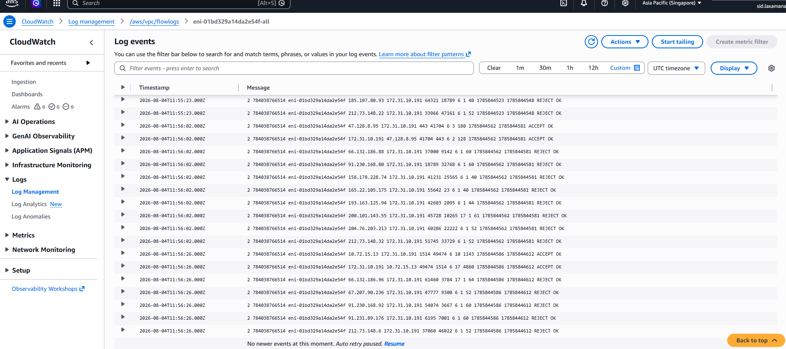
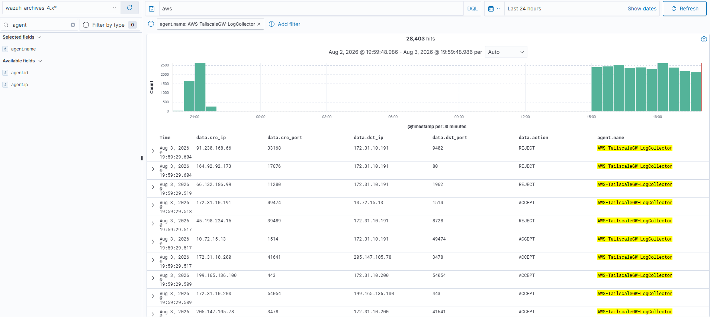
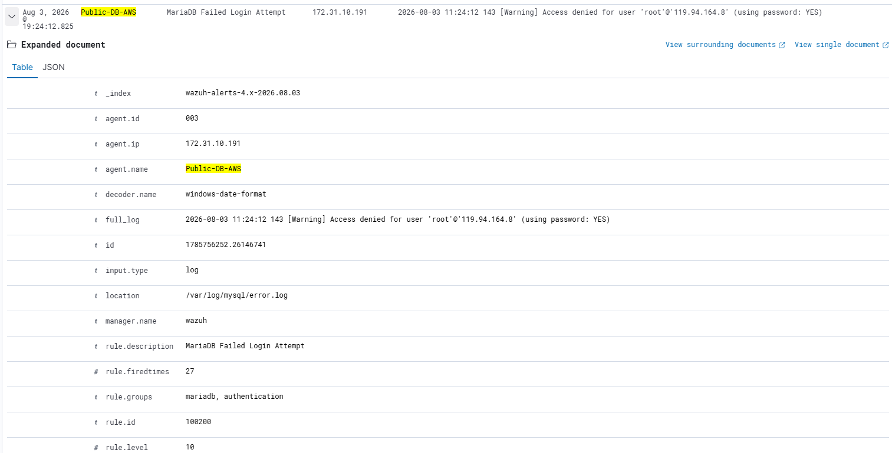
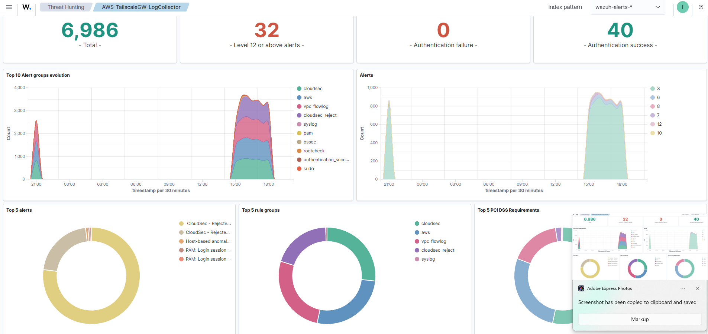
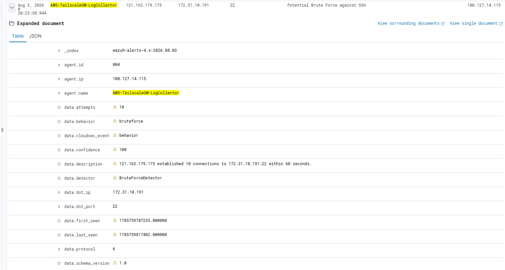

Extending an existing on-premises Wazuh SIEM into AWS using native cloud services, centralized network telemetry, and behavioral analytics — so one SOC covers both environments instead of two that don't talk to each other.
Most organizations already run a SOC and a SIEM. The problem isn't a lack of security tooling — it's that cloud adoption outpaces it. Workloads move into AWS generating real network telemetry, while the SOC keeps watching on-prem traffic through the same tools it always has. That split is a visibility gap, and it's the gap this project closes.
Commercial cloud SIEMs — Microsoft Sentinel, Splunk Enterprise Security, IBM QRadar, Cortex XSIAM — are genuinely excellent at solving this. They're also expensive: licensing, per-GB ingestion, and storage costs that are hard to justify for a lab, a small team, or anyone still learning the space.
The engineering goal here was never to replace an enterprise SIEM. It was to explore how far AWS-native services can extend an existing SOC before that spend becomes necessary — and how much of the noise-reduction work can happen before anything reaches the SIEM at all.
AWS workloads generate valuable network telemetry that traditionally stays isolated from on-prem security monitoring.
Enterprise cloud SIEM platforms bring licensing, ingestion, and storage costs that are hard to justify for a personal lab.
Forwarding every raw VPC Flow Log into a SIEM inflates storage and makes analyst investigations harder, not easier.
Four decisions shaped this pipeline before a single log ever moved — the diagram below is what they add up to.
Every ENI in the VPC — on an EC2 instance, an ALB, a NAT Gateway — emits its own VPC Flow Log records. That's the mechanism: no agent to install, no host to touch. The network fabric itself is the sensor.
That matters because network telemetry can surface activity before an endpoint log ever would. A port scan against a host with minimal logging might never show up locally — but it's unmissable at the network layer, because the connections themselves are the evidence.
There's a real difference between a raw flow record and behavioral intelligence. A flow record is just
src_ip, dst_ip, dst_port, action — a fact about one connection. Fourteen of those facts
from the same source in sixty seconds is a port scan. The record doesn't know that; the processing layer
does.

/aws/vpc/flowlogs CloudWatch log group, with one log stream per ENI.
data.src_ip, data.dst_port, data.action — landing in Wazuh's archive index.A real captured sequence, walked stage by stage — from first recon touch to a signal worth an analyst's attention.
An external host begins probing the environment. Nothing has fired yet — this is just traffic arriving at a public IP.
The same source IP touches an unusual spread of destination ports in a short window. The pipeline flags it as reconnaissance before anything downstream is touched.
The same source IP (119.94.164.8) shifts from scanning to repeated connection attempts against the database host on port 3306 — recon giving way to an actual attempt.
On the database host itself, MariaDB's own audit log confirms it — repeated Access denied for user 'root'@'119.94.164.8' entries, the same source IP the network layer already flagged.
Interspersed with the failures, successful logins start appearing from the same source — the same view, the same host, a very different outcome.
This pipeline also watches session and privilege-escalation activity on its own collector infrastructure
— PAM login sessions and a sudo to root, captured the same way. Shown here as what that
class of signal looks like when it fires, not a confirmed link to the database event above; that's exactly
the kind of connection the correlation work below is for.
The platform correlates three sources instead of trusting any one of them in isolation.
Ground truth for network activity — every connection attempt, accepted or rejected, regardless of what happens at the application layer.
Pattern recognition over those flow logs — a port scan, a brute force shape — the recon and attempt stages of an investigation.
The application's own record of what actually happened — authentication success or failure, independent of what the network saw.
Individually, a brute-force alert is a maybe. A failed login is routine. Correlated — same source IP, same destination, adjacent timestamps, moving from network-layer recon into application-layer authentication — an analyst can tell whether reconnaissance actually progressed into a successful login, instead of treating three separate low-confidence signals as three separate non-events.

Instead of forwarding every raw network record into Wazuh, the processing layer normalizes AWS telemetry and emits structured behavioral events — built so new detections can be added later without redesigning the pipeline.
{
"event_type": "port_scan_detected",
"source_ip": "203.0.113.42",
"destination_ports_touched": 14,
"window_seconds": 60,
"mitre_technique": "T1595 - Active Scanning",
"severity": "medium"
}
Every choice here traded something for something — worth being honest about both sides.
Network-layer visibility with zero agents to install, update, or lose track of across instances.
Managed, durable transport with nothing to provision or keep patched between generation and processing.
Port-scan and brute-force detection both need state — tracking unique ports or attempts per source over a rolling window. That's awkward across short-lived, stateless invocations.
Already the on-prem SOC's SIEM, with a mature decoder and rule ecosystem that already understands MariaDB, PAM, and sudo logs out of the box — no second platform to learn.
Cuts storage and alert fatigue — the SOC sees "port scan," not fourteen raw connection records to piece together by hand.
From an engineering manager's read, not a feature list.
One SOC sees both environments instead of running cloud security blind between two disconnected tools.
Analysts see behavioral events, not thousands of raw ACCEPT/REJECT flow records to sift through by hand.
Extends what already exists instead of standing up parallel tooling that has to be maintained twice.
New detections plug into the same processing layer without a pipeline redesign each time.
No second SIEM license, no per-GB cloud ingestion fees for a lab-scale or small-team environment.
Today it's port scans and brute force — the same shape extends to CloudTrail, GuardDuty, and beyond.
The platform is no longer just an architecture demonstration—it is an operational hybrid SOC ingesting AWS telemetry, running custom behavioral detections, and presenting correlated security events inside Wazuh.
Provides analysts with a single pane of glass for cloud telemetry, authentication events, behavioral detections, and rule trends.

Instead of forwarding raw flow logs, the EC2 processing engine emits structured security events with confidence scores, detector names and attack metadata.

Wazuh continuously evaluates managed hosts for CVEs and vulnerable packages, extending the platform beyond network telemetry.
The SOC monitors Windows endpoints, Windows Server, public cloud workloads and the AWS Log Collector from one centralized manager.
Framed as maturity phases rather than a flat feature backlog — each phase builds on the last.
Production telemetry ingestion, modular behavioral detection, live Wazuh integration, MITRE-ready alerting, OpenSearch dashboards.
Broaden beyond network flow into API-level activity and AWS's own managed detections.
Enrich source IPs with reputation and geolocation context before they reach an analyst.
Consolidate telemetry from multiple AWS accounts into one dedicated logging account.
Move from manually configured infrastructure to versioned, repeatable deployments.
Extend the same pattern across a full multi-account landing zone.
{kind=link}
{kind=link}
{kind=link}
{kind=link}
{kind=link}
{kind=link}
{kind=link}
{kind=link}
{kind=link}
{kind=link}
{kind=link}
{kind=link}
{kind=link}